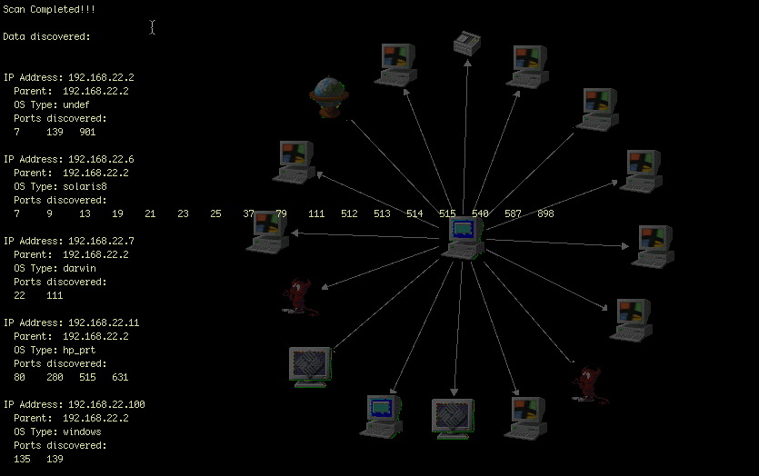
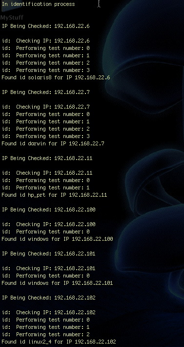
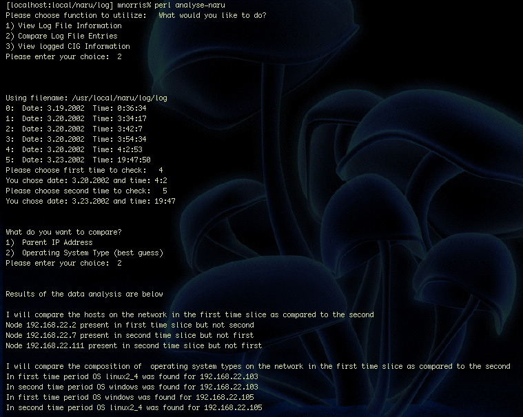

The Network Analysis and Reporting Utility (NARU):
The Network Analysis and Reporting Utility (NARU) is the corporate networking tool of the future. When connnected to an unknown network, it will find all of the nodes on the same network, find the path the data traverses from the local node to the remote node, the network services offered by the remote host, and the operating system being run by the remote host. The NARU will then display all of this information in the remarkably intuitive and user friendly NARG (Network Analysis and Reporting GUI).


